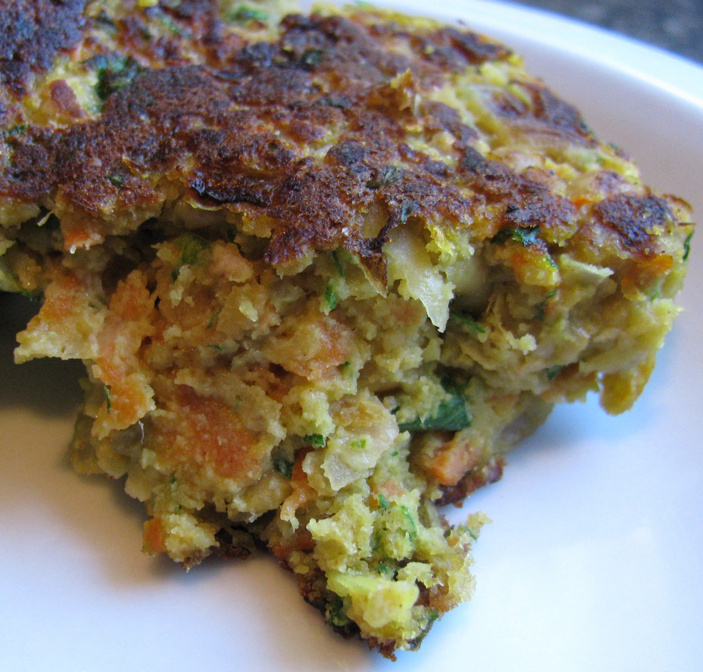

Falalfel Patties
Ingredients
- 2 T olive oil
- 1-1/2 C minced onion
- 3 cloves garlic
- 1 tsp cumin
- 1 C grated carrot
- 1-3/4 C (15oz can) cooked chickpeas (drained)
- 1-1/2 T tahini
- 1/4 C minced fresh parsley
- 1/3 C chickpea flour
- 1/2 tsp baking soda
- 1/2 tsp salt
Cooking Instructions
- In a large skillet over medium heat, sautee onions in 1 T olive oil until soft
- Add garlic, cumin and carrot then sautee 2 minutes.
- Transfer to a large bowl.
- Add drained chickpeas, mash by hand or food processor, add tahini and parsley.
- In a smaller bowl combine chickpea flour, baking soda and.
- Add to veggie mixture and mix well.
- With floured hands form 4 patties and lightly dust with remaining flour.
- Heat 1 T oil in large skillet over medium heat(or on a griddle).
- Add patties to skillet.
- Cook for 1 minute or when browning starts, then flip.
- Cook for about 2 minutes before flipping again.
- Keep cooking and flipping every minute or 2 until they are a deep golden brown on both sides.
- Squeeze fresh lemon juice on top. (I never remember to do this)